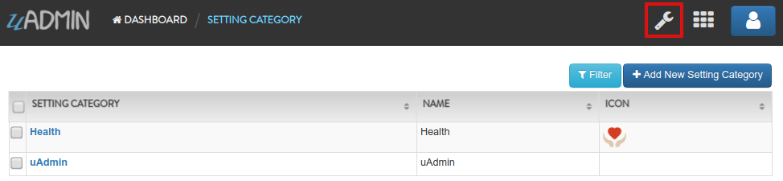

Setting Functions¶
In this section, we will cover the following functions in-depth listed below:
uadmin.DataType¶
type DataType int
DataType is a list of data types used for settings.
DataType has 7 functions:
Boolean() - A data type that has one of two possible values (usually denoted true and false), intended to represent the two truth values of logic and Boolean algebra
DateTime() - Provides functionality for measuring and displaying time
File() - A data type used in order to upload a file in the database
Float() - Used in various programming languages to define a variable with a fractional value
Image() - Used to upload and crop an image in the database
Integer() - Used to represent a whole number that ranges from -2147483647 to 2147483647 for 9 or 10 digits of precision
String() - Used to represent text rather than numbers
See uadmin.Setting for the examples.
Quiz:
uadmin.GetSetting¶
func GetSetting(code string) interface{}
GetSetting return the value of a setting based on its code.
Suppose I have the record “Water Daily Intake for Men” that has the value of 13 and the Data Type is Integer.

Go to the main.go and print the returning value of the GetSetting:
func main(){
// Some codes
// GetSetting reads the Code then returns the value
uadmin.Trail(uadmin.DEBUG, uadmin.GetSetting("Health.WaterDailyIntakeforMen"))
}
Now run your application and check the result in your terminal.
[ DEBUG ] 13
Quiz:
uadmin.Setting¶
type Setting struct {
Model
Name string `uadmin:"required;filter;search"`
DefaultValue string
DataType DataType `uadmin:"required;filter"`
Value string
Help string `uadmin:"search" sql:"type:text;"`
Category SettingCategory `uadmin:"required;filter"`
CategoryID uint
Code string `uadmin:"read_only;search"`
}
Setting model stored system settings.
Data Type has 7 choices:
Boolean - A data type that has one of two possible values (usually denoted true and false), intended to represent the two truth values of logic and Boolean algebra
DateTime - Provides functionality for measuring and displaying time
File - A data type used in order to upload a file in the database
Float - Used in various programming languages to define a variable with a fractional value
Image - Used to upload and crop an image in the database
Integer - Used to represent a whole number that ranges from -2147483647 to 2147483647 for 9 or 10 digits of precision
String - Used to represent text rather than numbers
func (*Setting) ApplyValue¶
func (s *Setting) ApplyValue()
ApplyValue changes uAdmin global variables’ value based in the setting value.
func (*Setting) GetValue¶
func (s *Setting) GetValue() interface{}
GetValue returns an interface representing the value of the setting.
func (*Setting) ParseFormValue¶
func (s *Setting) ParseFormValue(v []string)
ParseFormValue takes the value of a setting from an HTTP request and saves in the instance of setting.
func (*Setting) Save¶
func (s *Setting) Save()
Save overrides save.
Go to Example #4: ParseFormValue function to see how ParseFormValue works.
Save() - Saves the object in the database
There are 2 ways you can do for initialization process using this function: one-by-one and by group.
One-by-one initialization:
func main(){
// Some codes
settingCategory := uadmin.SettingCategory{}
setting := uadmin.Setting{}
setting.Category = settingCategory
setting.CategoryID = 1
setting.Code = "Code"
setting.DataType = uadmin.DataType(0).String(),
setting.DefaultValue = "Default Setting Value"
setting.Help = "Help"
setting.Name = "Setting Name"
setting.Value = "Setting Value"
}
By group initialization:
func main(){
// Some codes
settingCategory := uadmin.SettingCategory{}
setting := uadmin.Setting{
Category: settingCategory,
CategoryID: 1,
Code: "Code",
DataType: uadmin.DataType(0).String(),
DefaultValue: "Default Setting Value",
Help: "Help",
Name: "Setting Name",
Value: "Setting Value",
}
}
In the following examples, we will use “by group” initialization process.
Page:
Quiz:
uadmin.SettingCategory¶
type SettingCategory struct {
Model
Name string
Icon string `uadmin:"image"`
}
SettingCategory is a category for system settings.
There are 2 ways you can do for initialization process using this function: one-by-one and by group.
One-by-one initialization:
func main(){
// Some codes
settingCategory := uadmin.SettingCategory{}
settingCategory.Name = "Setting Category Name"
settingCategory.Icon = "/media/images/icon.png"
}
By group initialization:
func main(){
// Some codes
settingCategory := uadmin.SettingCategory{
Name: "Setting Category Name",
Icon: "/media/images/icon.png",
}
}
In this example, we will use “by group” initialization process.
Go to main.go and apply the following codes below to create a Health setting category:
func main() {
// Some codes
// Setting Category configuration that assigns the name and path
// where the icon is located
settingCategory := uadmin.SettingCategory{
Name: "Health",
Icon: "/media/images/heart.png",
}
// Save the settingCategory in the database
uadmin.Save(&settingCategory)
}
Now run your application. From uAdmin dashboard, click on “SETTING CATEGORIES”.

As a result, the Health record was saved in the database.

Now go to Settings page by clicking on the wrench icon on the top right part to see the result.
Result

Quiz: